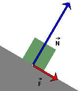

. The red arrow labeled
. The red arrow labeled  represents the friction force.
(The friction force is directed down the incline, as in the
figure, when the block is moving up the incline.)
represents the friction force.
(The friction force is directed down the incline, as in the
figure, when the block is moving up the incline.)
When two objects are in direct contact, each object exerts a "contact" force on the other one. The component of the contact force that is perpendicular to the surface of contact is called the normal force.
The component of the contact force that lies in the surface of contact is called friction.
E.g., imagine a block on an incline, as illustrated in the figure
below. The normal force exerted by the incline on the block is
represented by the blue arrow labeled . The red arrow labeled represents the friction force.
(The friction force is directed down the incline, as in the
figure, when the block is moving up the incline.)

Contact forces are basically electromagnetic forces between the molecules at the surfaces of the contacting objects. Thus, the normal force exerted on the block is the sum of many, many tiny normal forces exerted on the molecules of the block at the block's surface that is in contact with the incline.
In the illustration above, the normal force is shown to be acting on the block at the center point of the bottom surface of the block. In situations where torques need to be considered, the point where this one total normal force is acting may have to be chosen elsewhere. This point is determined by the requirement that the total normal force produce the same torque as the many tiny normal forces together.
The friction force
illustrated above, like the normal force , is the sum of many tiny friction
forces distributed all over the surface of contact.